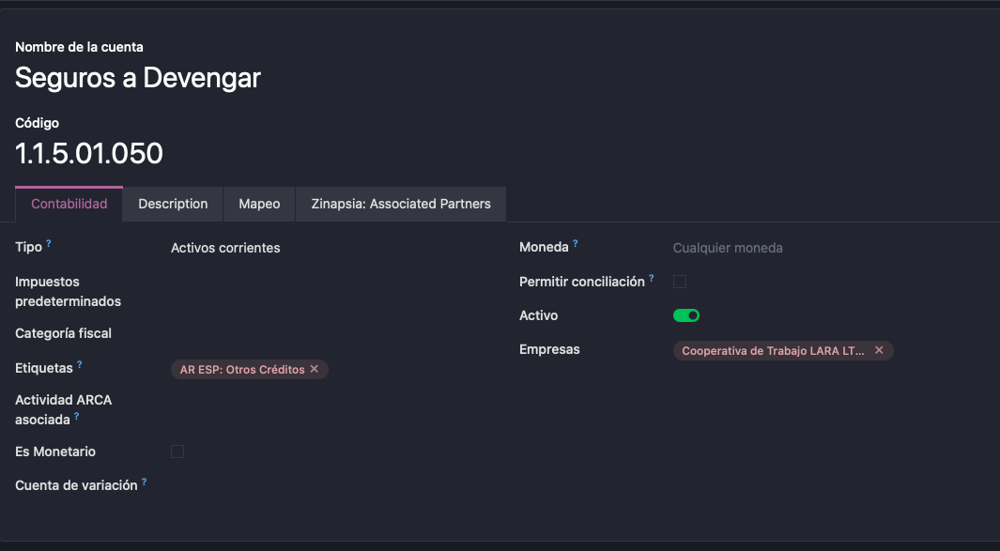
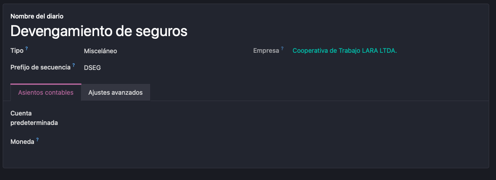
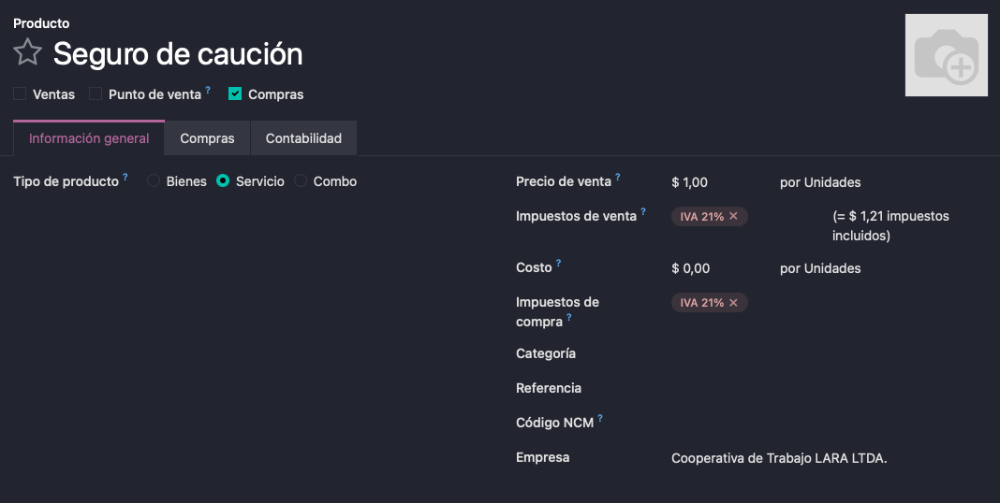
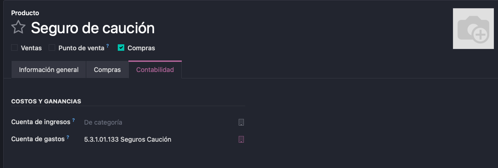

Qué tiene que existir en Contabilidad antes de completar la sección Contabilidad de los Ajustes de Seguros y de crear los medios de pago. Lo hace el contador o un administrador de Contabilidad, una sola vez por compañía.
Este artículo se completa en cada fase. Hoy cubre la Fase 2 (facturas, pagos y devengamiento). La Fase 3 agregará lo que haga falta para siniestros (crédito con la aseguradora, recuperos) y cauciones.
Los nombres y códigos son ejemplos: use los de su plan de cuentas. Los tipos de cuenta y de diario son los que muestra Odoo en el campo Tipo.
| Qué | Tipo | ¿Cuándo hace falta? |
|---|---|---|
| Cuenta de gasto de seguros | Cuenta – Gastos | Siempre |
| Cuenta de seguros a devengar | Cuenta – Prepagos | Devengamiento del módulo |
| Cuenta de proveedores (aseguradoras) | Cuenta – Por pagar | Siempre (normalmente ya existe) |
| Cuenta de pagos pendientes del banco | Cuenta – Activos corrientes, conciliable | Pagos automáticos o programados |
| Diario de devengamiento | Diario – Varios | Devengamiento del módulo |
| Diario de compras | Diario – Compras | Siempre (ya existe) |
| Diarios de banco y tarjeta | Diario – Banco / Tarjeta de crédito | Medios de pago |
| Impuesto IVA compras | Impuesto de compra | Siempre (ya existe) |
| Producto de seguros | Producto – Servicio, se compra | Siempre |
| Contabilidad analítica | Plan y cuentas analíticas | Opcional |
| Cuenta y diario de gastos diferidos | Prepagos / Varios | Solo con Gastos diferidos de Enterprise |
| Moneda extranjera y diferencia de cambio | Moneda / cuentas de diferencia de cambio | Pólizas en dólares |
Menú Contabilidad › Configuración › Plan de cuentas, botón Nuevo.
| Cuenta (ejemplo) | Tipo | Permitir conciliación | Para qué |
|---|---|---|---|
| Seguros (gasto) | Gastos | No | El costo del seguro. Es la cuenta de gastos del producto de seguros. Si quiere el gasto separado por ramo (Seguros automotores, Seguros de incendio, Seguros de caución…), cree una por ramo y asígnela en el ramo. |
| Seguros a devengar | Prepagos (activo) | No | Lo pagado o facturado por adelantado que todavía no es gasto. Solo con Devengamiento del módulo. El ajuste acepta cuentas de tipo Prepagos, Activos corrientes o Activos no corrientes. |
| Proveedores | Por pagar (pasivo) | Sí | La deuda con las aseguradoras. Normalmente se usa la cuenta de proveedores que ya trae el plan. Si quiere separar la deuda con aseguradoras, cree una cuenta de este tipo y asígnela en cada aseguradora (ficha del contacto, pestaña Contabilidad, cuenta a pagar). |
| Pagos pendientes | Activos corrientes | Sí | Puente entre el pago y el extracto bancario: el pago generado queda ahí hasta conciliarlo con el banco. El plan suele traerla; tiene que estar cargada en cada método de pago saliente del banco (ver punto 2). |
| Cheques diferidos emitidos | Pasivos corrientes | Sí | Solo si se pagan cuotas con cheques propios: es la cuenta pendiente del método Cheques Propios. En Argentina el plan de cuentas suele traerla; si no, créela. |
Con el plan de cuentas argentino y los módulos de ajuste por inflación (por ejemplo, en Grupo Lara):
| Campo | Valor | Por qué |
|---|---|---|
| Código | Dentro de 1.1.5 Otros créditos (ej. 1.1.5.01.050) | Es un gasto pagado por adelantado. No va en 1.1.1 (Cajas y Bancos): ahí se mezclaría con los bancos en los reportes que agrupan por código. |
| Tipo | Activos corrientes (o Prepagos) | El módulo acepta los dos. |
| Etiquetas | AR ESP: Otros Créditos | Rubro del Estado de Situación Patrimonial. |
| Moneda | Cualquier moneda (sin fijar) | Con una moneda extranjera fija, la revalorización de moneda la ajustaría por tipo de cambio (ver punto 7). |
| Permitir conciliación | Desmarcado | El módulo nunca concilia esta cuenta. Marcado, los movimientos aparecen como pendientes de conciliar. |
| Es Monetario | Desmarcado | Es una partida no monetaria (derecho a recibir un servicio, RT 6): tiene que reexpresarse en el ajuste por inflación, que solo ajusta las cuentas no monetarias. Odoo lo marca solo para las cuentas de Activos corrientes: hay que desmarcarlo a mano. |

La cuenta bien configurada.
Las demás cuentas de este artículo quedan bien con el valor que propone Odoo para Es Monetario: la de gasto (Gastos) no es monetaria; proveedores, pagos pendientes y cheques diferidos sí lo son.
Si una póliza dura más de 12 meses, la parte que se devenga después del año es no corriente. El módulo usa una sola cuenta de seguros a devengar; la reclasificación al cierre se hace con un asiento manual si el contador lo necesita.
Menú Contabilidad › Configuración › Diarios.
| Diario (ejemplo) | Tipo | Qué configurar |
|---|---|---|
Devengamiento de seguros (prefijo de secuencia DSEG) | Varios (Misceláneo) | Cuenta predeterminada: vacía. Moneda: vacía (la de la compañía). Recibe un asiento por póliza y por mes (gasto contra seguros a devengar); cada asiento ya trae sus dos cuentas. Puede usarse el de Operaciones misceláneas, pero un diario propio facilita controlarlo. Es uno solo aunque haya pólizas en dólares (ver punto 7). |
| Facturas de proveedores | Compras | Ya existe. Las facturas de seguros usan el diario de compras por defecto (en Argentina, el que maneja los comprobantes de proveedor). |
| Banco (cada cuenta bancaria desde la que se paga) | Banco | Pestaña Pagos salientes: cada método de pago (Manual, Cheques Propios, etc.) tiene que tener su Cuenta pendiente (la de pagos pendientes, o la de cheques diferidos para Cheques Propios). Sin esa cuenta, el medio de pago de Seguros no se puede guardar. |
| Tarjeta de crédito (si hay pólizas debitadas de una tarjeta) | Tarjeta de crédito | Igual que el banco: el método de pago saliente necesita una Cuenta pendiente, que en este tipo de diario no viene cargada. |

El diario de devengamiento bien configurado: tipo Misceláneo, sin cuenta predeterminada y sin moneda.
Menú Contabilidad › Proveedores › Productos, botón Nuevo:
| Campo | Valor |
|---|---|
| Nombre | Uno por ramo (Seguro automotor, Seguro de caución, etc.) o uno general (Prima de seguros) |
| Tipo de producto | Servicio |
| Compras | Marcado (se puede comprar). Ventas, desmarcado. |
| Impuestos de compra | IVA compras 21% (o el que corresponda) |
| Pestaña Contabilidad › Cuenta de gastos | La cuenta Seguros del punto 1 |

Solapa Información general: Compras marcado, Ventas desmarcado, tipo Servicio e Impuestos de compra. El precio y los impuestos de venta no se usan.

Solapa Contabilidad: la Cuenta de gastos del ramo (en el ejemplo, 5.3.1.01.133 Seguros Caución). La cuenta de ingresos no se usa.
El ajuste Producto de seguros solo ofrece productos de tipo Servicio que se pueden comprar. Un ramo puede tener su propio producto (pestaña Contabilidad del ramo).
En Contabilidad › Configuración › Ajustes, sección de gastos diferidos:
Con este método no hacen falta la cuenta de seguros a devengar ni el diario de devengamiento del módulo.
El devengamiento respeta las fechas de bloqueo contable: si un mes ya está cerrado, su asiento se registra el primer día abierto. No hace falta configurar nada; conviene saberlo antes de cerrar períodos.
Con todo lo anterior creado, siga con los pasos 8. Contabilidad de seguros y 9. Medios de pago de Puesta en marcha:
| Ajuste de Seguros | Se elige |
|---|---|
| Producto de seguros | El producto del punto 4 |
| Cuenta de seguros a devengar | La cuenta Seguros a devengar del punto 1 |
| Diario de devengamiento | El diario Devengamiento de seguros del punto 2 |
| Medio de pago › Diario y método de pago | Un diario de banco o tarjeta y un método saliente con cuenta pendiente (punto 2) |
| Ramo › Cuenta de gasto / analítica | Opcional: cuenta de gasto por ramo (punto 1) y distribución analítica (punto 5) |